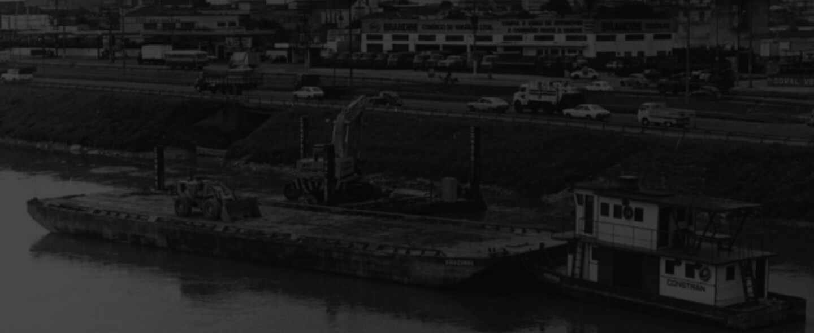

A Vila Leopoldina origina-se nos anos finais do século 19, quando a empresa E. Richter & Companhia executa loteamentos no bairro da Lapa, região banhada pelas margens dos rios Tietê e Pinheiros. O nome da região foi dado em homenagem a uma das empreendedoras que liderava a empresa, Leopoldina Kleeberg. Na época, o acesso à região era dado por vias férreas e hídricas, sendo os trens, bondes e barcos a vapor os principais meios de transporte utilizados na região.
A história da Vila Leopoldina está diretamente ligada à história do bairro da Lapa, que recebeu forte investimento em infraestrutura logo no início do século 20, quando foi escolhida para ser a sede das principais oficinas da São Paulo Railway, empresa paulista de trens e bondes, por sua proximidade ao rio Tietê, cujas águas eram essenciais para o abastecimento das caldeiras que moviam as máquinas a vapor da empresa. A São Paulo Railway e, posteriormente, a São Paulo Trainway, Light and Power Co., empresas de energia e transportes, foram importantes para a história do desenvolvimento urbano da cidade de São Paulo, por serem as responsáveis pela instalação de linhas de bonde e linhas de eletricidade nos bairros da Lapa e Vila Leopoldina. As ocupações iniciais do bairro atraíram imigrantes e empresas. Os terrenos com valores baratos atraíam indústrias a se instalarem na região, a mão de obra abundante, majoritariamente de imigrantes, era a força de trabalho necessária para o bairro crescer. Instalaram-se então grandes indústrias, como a Cia. Fiat Lux, Metalúrgica Martins Ferreira e a Fábrica de Tecidos e Tecelagem Lapa.
Nos anos 30, com os projetos de retificação do rio Tietê e Pinheiros, as vias fluviais tornam-se atrativas para empreendimentos se instalarem na região. Com a vasta malha ferroviária presente, tornou-se estratégica para a chegada de novas indústrias no local. Uma dessas indústrias foi a Metalúrgica Atlas, instalada em 1944 inicialmente como uma oficina de usinagem de equipamentos de grande porte para a Cia. Brasileira de Alumínio – CBA, do Grupo Votorantim.
Os anos 50 e 60 trouxeram mais crescimento para a região, quando da instalação do Mercado Municipal da Lapa e do Centro Estadual de Abastecimento Sociedade Anônima, o famoso CEASA, importante entreposto comercial da região, fornecendo insumos para a população direto dos produtores do interior a preços competitivos. Em 1969 o CEASA se une à Companhia de Armazéns Gerais do Estado de São Paulo, a CAGESP e torna-se CEAGESP, Companhia de Entrepostos e Armazéns Gerais do Estado de São Paulo.
Os anos 90 trouxe ao bairro o Parque Villa-Lobos e a valorização do mercado imobiliário na região, bem como a evolução do antigo bairro industrial em um efervescente polo de produção cultural: diversas produtoras e agências de cinema se instalaram no bairro, e utilizam agora os antigos galpões das indústrias como estúdios de filmes e conteúdo publicitário – grandes peças do cinema brasileiro foram produzidas aqui, como o consagrado “Cidade de Deus” (2002) da produtora O2.